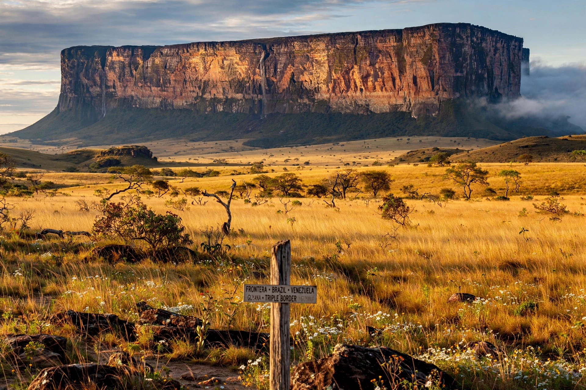

| Country | Brazil |
|---|---|
| Region | North |
| Capital and largest city | Boa Vista |
| Area | 224,274 km² |
| Population | ~636,700 (2022 census) |
| Borders | Venezuela, Guyana, Amazonas, Pará |
| Highest point | Mount Roraima, 2,810 m (shared summit) |
| Main river | Branco River |
Roraima (Portuguese pronunciation: [ʁoˈɾɐjmɐ]) is the northernmost and least populous state of Brazil, located in the North Region. It borders Venezuela to the north and northwest, Guyana to the east, and the Brazilian states of Amazonas and Pará to the south and southeast. Its capital, Boa Vista, lies on the Branco River and is the only Brazilian state capital situated entirely north of the Equator. The state takes its name from Mount Roraima, the great flat-topped tepui at the tri-border with Venezuela and Guyana; the name comes from the Indigenous Pemón language, conventionally rendered "mother of the winds" or "big bluish-green".
The Rio Branco valley was contested between Portuguese, Dutch, English, and Spanish interests through the 18th century, with Portuguese control consolidated around forts such as São Joaquim at the Uraricoera–Tacutu confluence. Settlement remained sparse — cattle ranching on the natural savannas (lavrado) and mission villages — and Boa Vista was founded as a parish and cattle center in the 19th century. During World War II the valley was detached from Amazonas as the Federal Territory of Rio Branco (1943); it was renamed Roraima in 1962 and elevated to statehood under the 1988 Constitution, with its first elected governor taking office in 1991.
Roraima divides between Amazon rainforest in the south and west, and open savanna in the northeast around Boa Vista. The Branco River, formed by the Uraricoera and Tacutu, drains most of the state southward to the Rio Negro. In the far north the Pacaraima Mountains carry the Venezuelan frontier, culminating in Mount Roraima and a chain of tepuis. A large share of the state is Indigenous land or conservation area: the Yanomami Indigenous Territory (shared with Amazonas) is Brazil's largest, and the Raposa Serra do Sol territory, homologated in 2005 amid controversy with rice farmers, covers much of the northeast.
Since 2015 Roraima has been the principal land entry point for Venezuelans fleeing their country's crisis, crossing at Pacaraima to Boa Vista, where the federal Operação Acolhida (Operation Welcome) has run shelters and an "interiorization" relocation program — an influx large relative to the state's small population that has strained services while transforming Boa Vista. In 2023 the federal government declared a public-health emergency in the Yanomami territory in response to the devastation wrought by tens of thousands of illegal gold miners (garimpeiros) — mercury pollution, malaria, and malnutrition — and launched a major operation to expel them. The state is connected to the rest of Brazil principally by the BR-174 highway south to Manaus and north to the Venezuelan border.